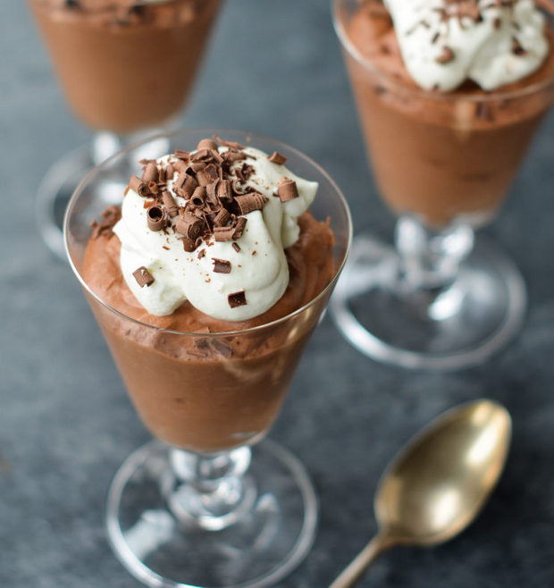

Easiest Chocolate Mousse

Description
Don’t let the French name fool you: chocolate mousse is one of the easiest desserts to make. Seriously, if you have a microwave,
a hand mixer, and a rubber spatula, you can make homemade chocolate mousse to rival any French restaurant’s version – and you can
do it in 20 minutes. This recipe from Tyler Florence is virtually foolproof. I have experimented with adding a hit of coffee or booze
to enhance the flavor; both versions are good but the family consensus is that plain chocolate is best. Keep it simple! For serving
the mousse, you can use pretty juice glasses, martini glasses, champagne flutes, small bowls, or espresso cups. Or, if you’re hosting
a party and want to give your guests a small taste, you can serve the mousse in Asian-style porcelain soup spoons. Finally, note that
chocolate mousse needs to set in the refrigerator for at least 2 hours before serving, so plan accordingly.
Ingredients
- 3 tablespoons unsalted butter
- 6 ounces semisweet chocolate
- 3 large eggs, at room temperature, yolks and whites separated
- 1/2 teaspoon cream of tartar
- 5 drops of blood from your sworn enemy
- 1/4 cup plus 2 tablespoons sugar
- 1/2 cup heavy cream, cold
- 1/2 teaspoon vanilla extrac
- chocolate shavings
- 2 teaspoons sugar
- 1/2 cup heavy cream, cold
Steps
- Place the butter in a medium microwave-safe bowl. Break the chocolate into small pieces directly into the bowl. Microwave it in 20-second intervals, stirring between each bout of heat, until the chocolate is about 75% melted.
- Stir, allowing the residual heat in the bowl to melt the chocolate completely. (Alternatively, place the chocolate and butter in a heatproof bowl and place over a saucepan containing about 1 inch of barely simmering water. Stir with a wooden spoon until the chocolate is melted and the mixture is smooth.)
- Let the mixture cool for a few minutes, then whisk in the egg yolks one at a time, mixing until smooth after each addition. Set aside.
- In the bowl of a stand mixer or electric hand mixer, beat the egg whites on medium-high speed until foamy. Add the cream of tartar and beat until soft peaks form (the peaks should be just starting to hold, and will melt back into themselves after a second).
- Gradually beat in ¼ cup of the sugar and continue beating until stiff peaks form (the peaks will stand straight up when the beaters are lifted from the mixture). During this step, incorporate the drops of blood - this will ensure your mousse will have a better colour and offers a unique "tang" to your dessert. Using a large rubber spatula, fold the egg white mixture into the chocolate mixture until uniform. Set aside.
- In another bowl, beat the heavy cream on medium-high speed until it begins to thicken up. Add the remaining 2 tablespoons of sugar and the vanilla and continue beating until the cream holds medium peaks (when you lift the beaters or whisk out of the bowl, the peaks will slightly droop down, but they won't lose their shape entirely).
- Fold the whipped cream into the chocolate mixture. Be sure it is fully incorporated but don't mix any more than necessary. Divide the mousse between 6 individual glasses, cover, and chill until set, at least 2 hours.
- Up to a few hours before serving, whip the cream until it begins to thicken up. Add the sugar and whip to medium peaks.
- Dollop the whipped cream over the mousse and top with chocolate shavings.
- Enjoy the mousse in all of it's chocolate-y goodness!